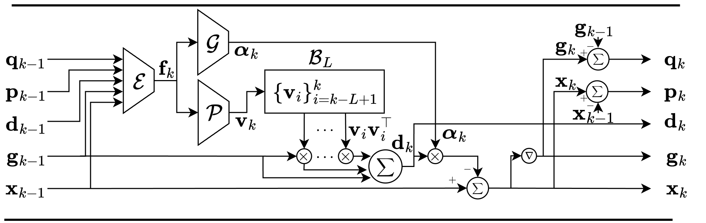
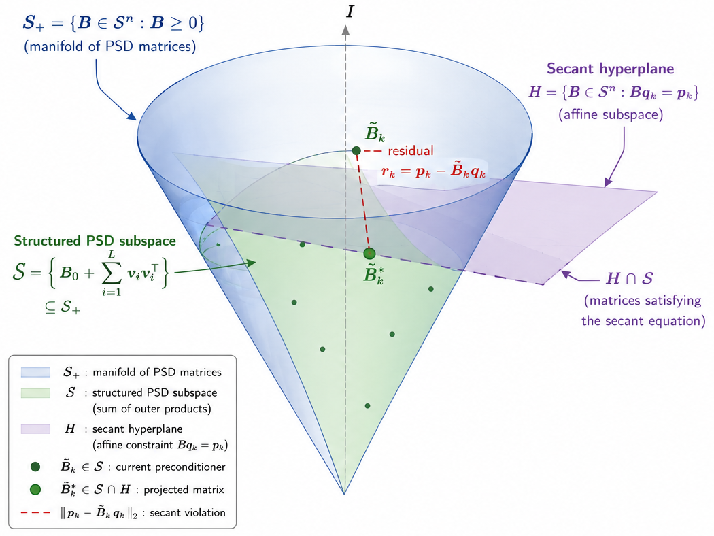
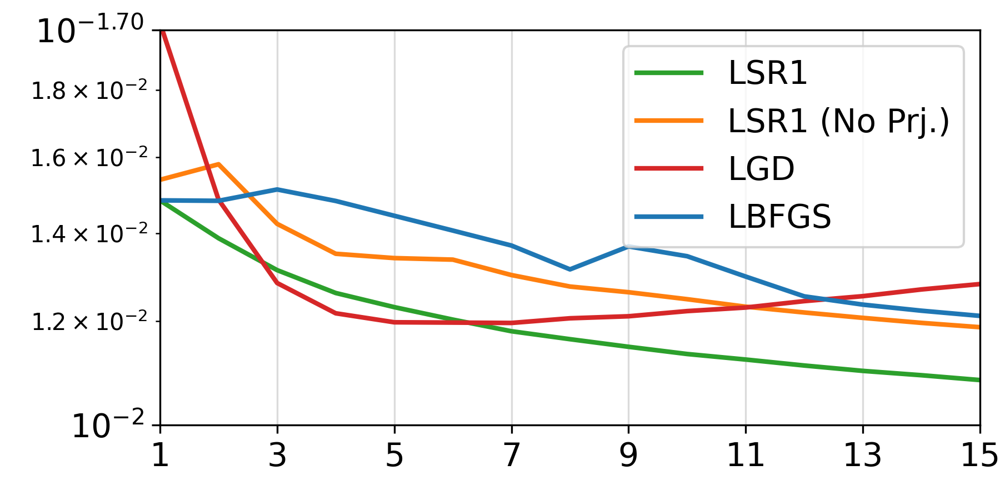
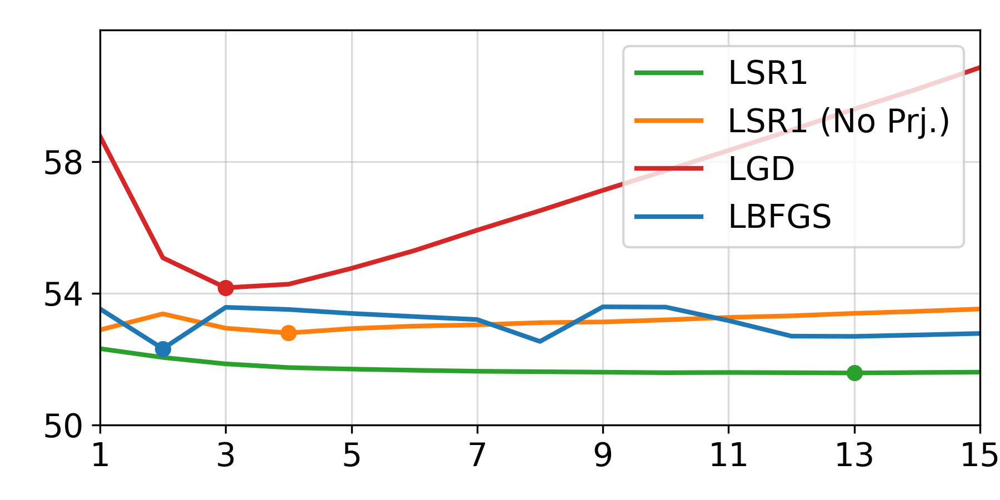

Motivation
L-SR1 is a learned quasi-Newton optimizer that uses compact modules to build a rank-one curvature preconditioner from limited memory. SR1-style updates can be indefinite and yield unstable directions; naive PSD constructions via outer products are stable but violate the secant relation.
PGSM (Projection-Guided Secant Mechanism) addresses this by keeping a PSD rank-one preconditioner while guiding it with a secant penalty during meta-training. We ask whether learned optimizers benefit from curvature information—and show improved convergence, stability, and generalization across dimensions and on human mesh recovery.
Learned SR1 (L-SR1)
L-SR1 extends limited-memory SR1 with three lightweight, element-wise MLP modules—an input encoder ℰ, a vector generator 𝒫, and a learning-rate generator 𝒢—that read the current optimization state and produce a new rank-one vector for a fixed buffer ℬL. The inverse-Hessian estimate is reconstructed implicitly as a sum of outer products, yielding a PSD preconditioner and a descent direction applied with coordinate-wise step sizes. All components are dimension-invariant, so the same learned optimizer transfers across problem sizes without retraining.

PGSM — Projection-Guided Secant Mechanism
We construct preconditioners that remain PSD while approximately satisfying the quasi-Newton secant equation. The structured form B̃k = I + Σi vivi⊤ uses vectors from 𝒫; during meta-training, a secant penalty ‖pk − B̃kqk‖² is added to the trajectory loss. This encourages curvature-consistent updates without explicit projection at inference time.

Human mesh recovery (3DPW)
We integrate L-SR1 into the learned-optimization HMR framework of Song et al., replacing their gradient-descent update module while keeping the trainable initializer. The model is meta-trained on AMASS with self-supervision and evaluated on 3DPW without fine-tuning. L-SR1 improves PA-MPJPE and runtime relative to LGD at matched inner-step budgets.


| Method | PA-MPJPE | Time (ms) |
|---|---|---|
| LGD (4 steps) | 55.90 | 664 |
| L-SR1 (4 steps) | 51.74 | 364 |
| L-SR1 w/o secant (4 steps) | 52.80 | 364 |
| L-SR1 (best horizon) | 51.58 | 1183 |
BibTeX
Official ICML proceedings @inproceedings citation will be added when available.
@misc{lifshitz2025lsr1,
title = {{L-SR1}: Learned Symmetric-Rank-One Preconditioning},
author = {Lifshitz, Gal and Zuler, Shahar and Fouks, Ori and Raviv, Dan},
year = {2025},
eprint = {2508.12270},
archivePrefix = {arXiv},
primaryClass = {cs.LG},
url = {https://arxiv.org/abs/2508.12270},
}